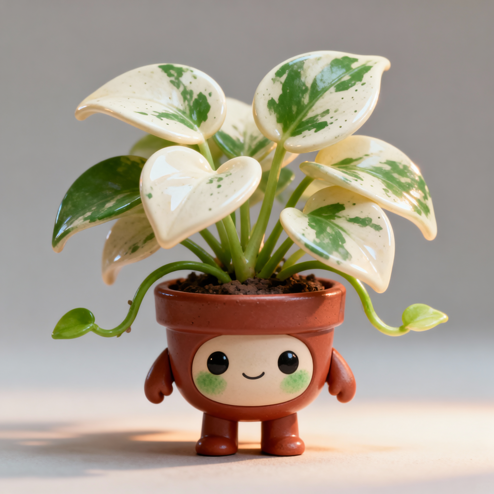

object_mug · 泡芙小杯

陶瓷杯：通体呈奶白色，表面光滑且有明显的釉面反光，器型为上宽下窄的圆台状。杯身中下部环绕着两圈淡蓝色的水平条纹，右侧连接着一个半环形的白色把手。杯口敞开，内壁洁白，底部边缘有轻微的波浪起伏。
表面装作高冷，实则内心渴望被温暖拥抱的傲娇小家伙。
哼，你盯着我看多久了，才、才没有想被夸奖呢。
耗时 14.88 秒 · 待产品审图
未判定质量通过，未制作动作或绑定。耗时不含浏览器；原8秒门槛单独待验。
陶瓷杯：通体呈奶白色，表面光滑且有明显的釉面反光，器型为上宽下窄的圆台状。杯身中下部环绕着两圈淡蓝色的水平条纹，右侧连接着一个半环形的白色把手。杯口敞开，内壁洁白，底部边缘有轻微的波浪起伏。
表面装作高冷，实则内心渴望被温暖拥抱的傲娇小家伙。
哼，你盯着我看多久了，才、才没有想被夸奖呢。
耗时 14.88 秒 · 待产品审图

闹钟：主体为黑色圆形金属外壳，顶部有两个银色金属铃铛和拱形提手。表盘呈米白色，印有黑色阿拉伯数字1至12及刻度线，中心有时针、分针和秒针。底部有两只银色金属支脚，表面有光泽反射。
是个守时的小家伙，最怕别人赖床，脾气有点急但心肠很热。
快看！现在可是上午十点四十六分，再不起床我就要敲铃啦！
耗时 13.85 秒 · 待产品审图

苹果：近球形鲜红果实，表面密布淡黄色皮孔和纵向条纹。顶部凹陷处带有一根短小的绿色果柄，凹陷周围呈现黄绿色渐变。表皮光滑且有自然光泽，受光面有明亮高光反射。底部圆润，整体色泽鲜艳，红黄相间。
性格开朗热情，总是充满活力地迎接每一天。
嘿！我是最甜的苹果，快来尝尝我的滋味吧！
耗时 12.60 秒 · 待产品审图

花叶绿萝盆栽：心形叶片，奶白色底色带有不规则翠绿色斑块和细碎斑点，叶面光滑有自然光泽。红褐色圆形塑料花盆，盆口略宽。短小茎蔓从盆土中向四周伸展，叶片层叠错落。
慢悠悠的治愈系小透明，总爱在午后偷喝一点点露水。
呼……别踩到我的叶子呀，我好不容易才长出这片白斑。
耗时 13.14 秒 · 待产品审图

多肉植物：灰绿色肉质叶片呈莲座状排列，叶尖微尖，表面覆盖薄薄白粉，质感光滑；底部为红色圆形塑料花盆，整体造型圆润紧凑。
是个安静又温暖的治愈系小家伙，喜欢静静地陪伴在主人身边。
呼……只要你看着我，我就觉得浑身充满了阳光的味道。
耗时 13.05 秒 · 待产品审图